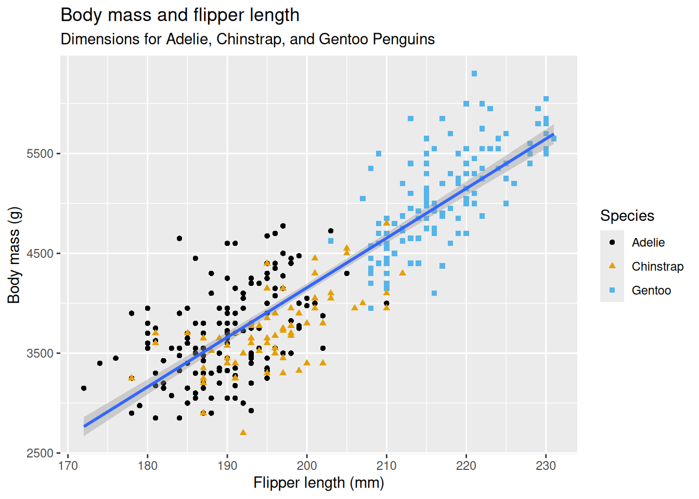
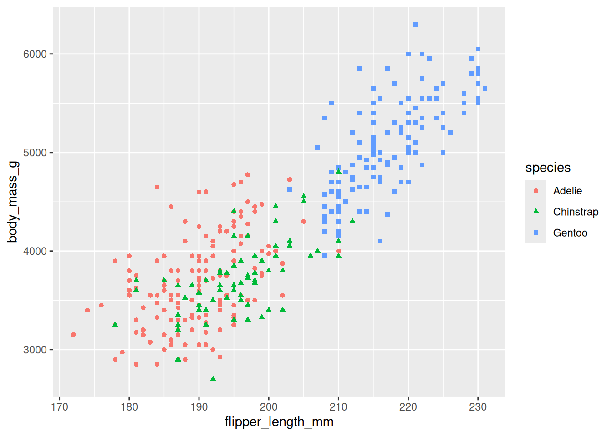
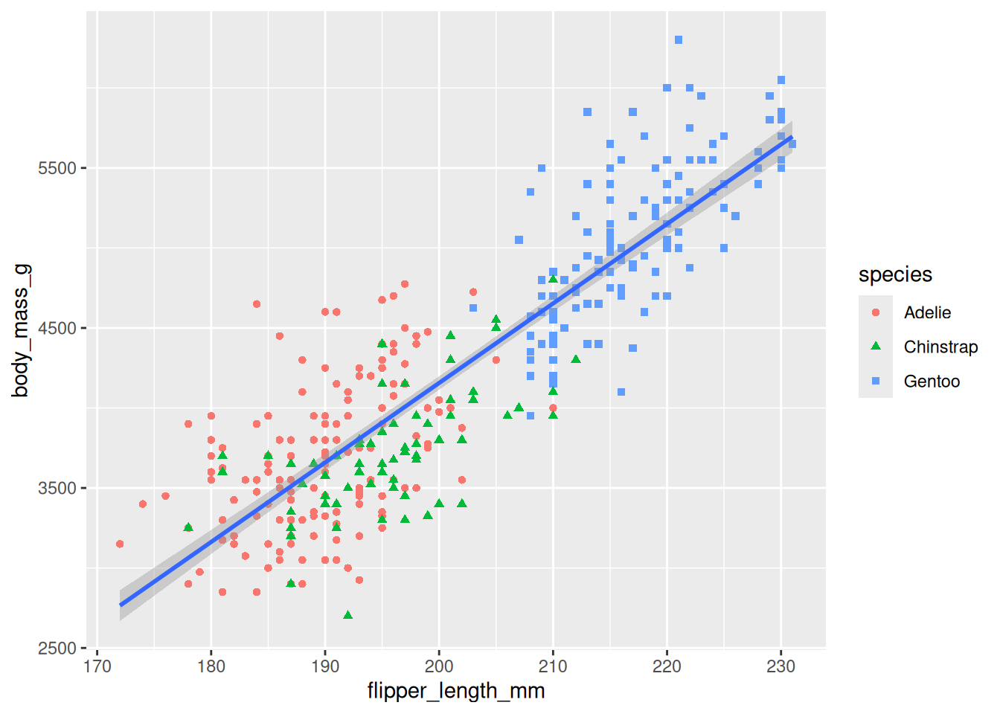
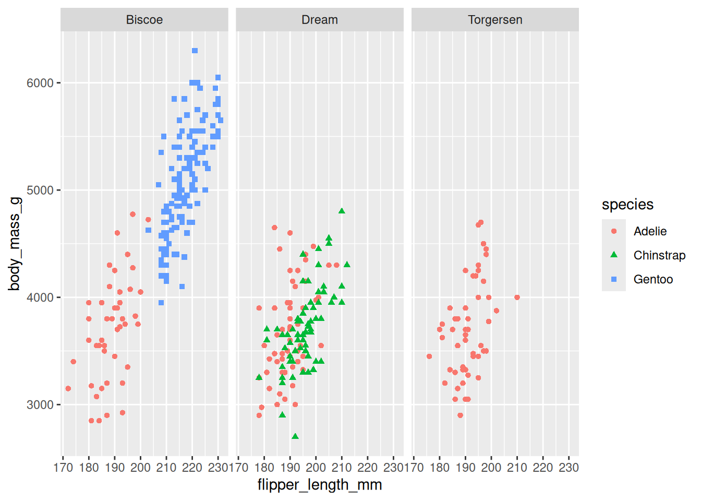
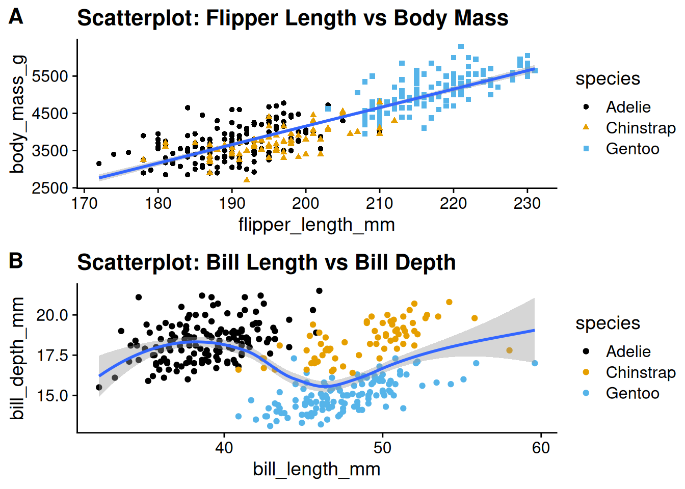
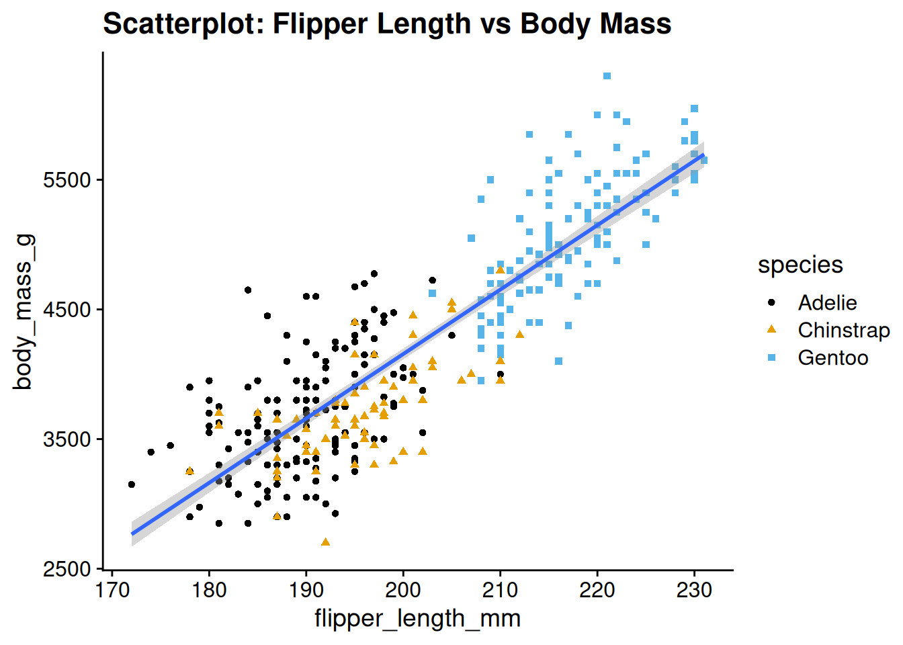
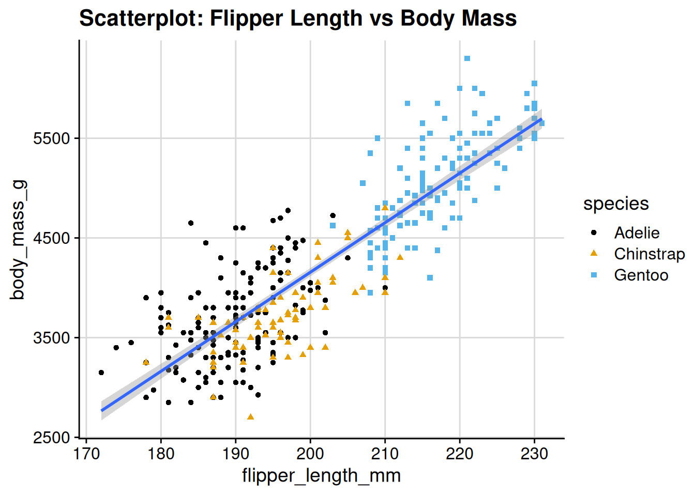

pkg_vec <- c("ggplot2", "palmerpenguins", "ggthemes")
for (x in pkg_vec) {
if (!requireNamespace(x, quietly = TRUE)) {
install.packages(x, dependencies = TRUE)
}
# if you want to programmatically attach
# libraries, this is the way to to do it
library(x, character.only = TRUE)
}10 ggplot2
For an accompanying video, see ggplot2.mp4.
10.1 Motivation
Creating attractive graphics is a crucial part of data analysis. Visualisations help you explore data, identify patterns, and communicate insights to others.
Whilst base R graphics (plot) are useful and fast for simple plots, they have the following drawbacks:
- Documentation is atrocious - it is hard to find what you need.
- It is very fiddly to create complex plots.
For this reason, we will be using ggplot2 for our data visualisation needs. ggplot2 is a powerful and flexible package that allows you to create a wide variety of plots. Due to its popularity, people writing the best visualisation packages for R are almost always writing them in ggplot2, so understanding ggplot2 will make it easier to use other packages.
10.2 Introduction
ggplot2 has an underlying philosophy, the Grammar of Graphics, which is a systematic way of thinking about visualisation.
The content below is a brief summary of the key points in the R4DS introductory chatpter on ggplot2.
In reading the R4DS content, you will come across that term and explanations around it, but in this introduction, I will just refer to the key components of ggplot2 that you need to know to get started.
To run the code below, you will need the ggplot2 (installed by tidyverse), palmerpenguins and ggthemes packages:
ggplot(
data = penguins,
mapping = aes(x = flipper_length_mm, y = body_mass_g)
) +
geom_point(aes(color = species, shape = species)) +
geom_smooth(method = "lm") +
labs(
title = "Body mass and flipper length",
subtitle = "Dimensions for Adelie, Chinstrap, and Gentoo Penguins",
x = "Flipper length (mm)",
y = "Body mass (g)",
color = "Species",
shape = "Species"
) +
scale_color_colorblind()`geom_smooth()` using formula = 'y ~ x'Warning: Removed 2 rows containing non-finite outside the scale range
(`stat_smooth()`).Warning: Removed 2 rows containing missing values or values outside the scale range
(`geom_point()`).
- Initial
ggplotcall:- Initialises the plot.
- Parameters:
data:- Specifies the data.
mapping:- Specifies how variables are mapped to the x and y axes.
aes(x = flipper_length_mm, y = body_mass_g)mapsflipper_length_mmto the x-axis andbody_mass_gto the y-axis.- Note that you cannot pass
list(x = ..., y = ...)toaes()or just writex = ..., y = ...directly intoggplot. They must be inside theaes()function.
- Note that you cannot pass
- Parameters set using the initial
ggplotcall are global to the plot, i.e. unless later geoms (geom_point,geom_smooth, etc.) override them, they will apply to all layers.
- The
+operator:- Adds layers to the plot.
- Each
+adds a new layer. - Note that it must come at the end of the line - if you put it at the start of a line,
Rwill think that this line is separate from the previous one, as the previous one will have ended.
geom_point:- Adds points to the plot.
aes(color = species, shape = species)maps thespeciesvariable to both color and shape.- Since the initial
ggplotcall included the mappingaes(x = flipper_length_mm, y = body_mass_g), thegeom_pointcall does not need to repeat this mapping. It will automatically useflipper_length_mmfor the x-axis andbody_mass_gfor the y-axis.
- Adds points to the plot.
geom_smooth:- Adds a best-fit line to the plot.
method = "lm"specifies that the line should be a linear model.method = "loess"would fit a loess curve, which is what your prac2 asks for.
- Like
geom_point, it does not need to specify the mapping since it inherits it from the initialggplotcall.
- Adds a best-fit line to the plot.
labs:- Adds labels to the plot.
title,subtitle,x,yare plot and axis titles.color, andshapeare legend titles.
- Adds labels to the plot.
scale_color_colorblind:- Changes the color palette to a colorblind-friendly one.
To get a feel for what different elements are doing, you can drop them from the plot and see what changes.
10.3 Summary
Below is a concise summary of the key information on ggplot2:
10.3.1 Basic Structure
Initiating a Plot:
Useggplot(data, aes(x, y))to start a plot. This sets up the canvas by specifying the data and how variables are mapped to the x and y axes. Note that without specifying anygeoms (see below), you will not see any content:ggplot(penguins, aes(x = flipper_length_mm, y = body_mass_g))
10.3.2 Aesthetic Mappings
Mapping Variables to Visual Properties:
Insideaes(), map variables to aesthetics such as:- Color: Differentiates groups (e.g.,
aes(color = species)). - Shape: Uses different symbols for groups (e.g.,
aes(shape = species)). - Size: Can reflect magnitude differences.
ggplot(penguins, aes(x = flipper_length_mm, y = body_mass_g)) + geom_point(aes(color = species, shape = species))Warning: Removed 2 rows containing missing values or values outside the scale range (`geom_point()`).
- Color: Differentiates groups (e.g.,
10.3.3 Geometric Objects (Geoms)
Different Plot Types:
Add layers to your plot using geoms. Common examples include:- Scatterplots:
geom_point() - Smooth Lines:
geom_smooth()(e.g., for adding a best-fit line) - Bar Charts:
geom_bar()orgeom_col() - Histograms and Density Plots:
geom_histogram(),geom_density()
ggplot(penguins, aes(x = flipper_length_mm, y = body_mass_g)) + geom_point(aes(color = species, shape = species)) + geom_smooth(method = "lm")`geom_smooth()` using formula = 'y ~ x'Warning: Removed 2 rows containing non-finite outside the scale range (`stat_smooth()`).Warning: Removed 2 rows containing missing values or values outside the scale range (`geom_point()`).
- Scatterplots:
10.3.4 Layering and Customization
Adding Layers:
Combine multiple geoms to add detail to your plot. Layers are added using the+operator.Custom Labels and Themes:
Enhance your plot with titles, axis labels, and legends usinglabs()and adjust appearance with theme functions.ggplot(penguins, aes(x = flipper_length_mm, y = body_mass_g)) + geom_point(aes(color = species, shape = species)) + geom_smooth(method = "lm") + labs( title = "Body mass and flipper length", subtitle = "Dimensions for Adelie, Chinstrap, and Gentoo Penguins", x = "Flipper length (mm)", y = "Body mass (g)", color = "Species", shape = "Species" ) + scale_color_colorblind()
10.3.5 Faceting
Splitting Data into Panels:
Use faceting (withfacet_wrap()orfacet_grid()) to create subplots based on a categorical variable, making it easier to compare groups.ggplot(penguins, aes(x = flipper_length_mm, y = body_mass_g)) + geom_point(aes(color = species, shape = species)) + facet_wrap(~ island)Warning: Removed 2 rows containing missing values or values outside the scale range (`geom_point()`).
10.3.6 Saving Your Plots
Exporting Graphics:
Useggsave()to save the most recent plot to a file {#sec-day4-prac}(e.g., PNG, PDF).ggsave("penguin-plot.png")
10.4 Combining Plots with cowplot::plot_grid
When you want to display multiple plots side by side (or in a grid), the cowplot package provides the convenient function plot_grid(). This function not only aligns axes but also lets you add labels (e.g., “A”, “B”, …) so that each subplot is clearly identified. This is especially useful in academic work where figures need to be self-contained and cross-referenced.
Here’s an example of combining two ggplot figures:
# Install and load cowplot if not already installed
if (!requireNamespace("cowplot", quietly = TRUE)) {
install.packages("cowplot")
}
library(cowplot)
# Create two example plots
library(ggplot2)
library(palmerpenguins)
library(ggthemes)
p1 <- ggplot(penguins, aes(x = flipper_length_mm, y = body_mass_g)) +
geom_point(aes(color = species, shape = species)) +
geom_smooth(method = "lm") +
labs(title = "Scatterplot: Flipper Length vs Body Mass") +
scale_color_colorblind() +
theme_cowplot() # using cowplot theme for consistent font sizes
p2 <- ggplot(penguins, aes(x = bill_length_mm, y = bill_depth_mm)) +
geom_point(aes(color = species)) +
geom_smooth(method = "loess") +
labs(title = "Scatterplot: Bill Length vs Bill Depth") +
scale_color_colorblind() +
theme_cowplot()
# Combine the two plots into one figure with labels
combined_plot <- plot_grid(
p1, p2,
labels = c("A", "B"), # Add subplot labels
label_size = 16, # Adjust label size if needed
align = "hv", # Align both horizontally and vertically
ncol = 1
) # Arrange side by side# Print the combined plot
combined_plot
As always, there are other packages that can achieve this (e.g. patchwork), but I’m familiar with cowplot.
10.5 Adequate Text Size
When creating plots, ensure that the text is large enough to be easily read. An appropriate minimum text size varies by forat (e.g. 2m x 1m poster vs a presentation), so look online for specifics (e.g. no less than 14pt for a poster, or whatever it is).
Typically, the ggplot2 default theme’s text size is too small. I therefore always use the cowplot::theme_cowplot() theme, as it a) has a larger default text size, and b) allows global changes to text size using its font_size parameter (e.g. across plot title, plot axis).
Here is an example:
p1 +
# 14 is actually the default, just for demonstration
theme_cowplot(font_size = 14) 
The theme is fairly minimal, so you can add gridlines, etc. if you want:
p1 +
theme_cowplot() +
# can also have `minor = "xy"` for minor gridlines
# (i.e. thinner gridlines between the thicker ones).
# can also just specify "x" or "y" for just one axis
background_grid(major = "xy") 
A final, important point regarding the theme: by default, the background is transparent, so if you save a plot to file as a PNG, the background will be transparent. To understand, create p1, save it as a PNG and open it:
dir.create("_tmp", showWarnings = FALSE)
ggsave("_tmp/p-no_bg.png", plot = p1)So, an unfortunately complication is that if you wish to save PNG images, then you need to usually make the background white:
p1 <- p1 +
theme_cowplot() +
theme(
plot.background = element_rect(fill = "white"),
panel.background = element_rect(fill = "white")
)
dir.create("_tmp", showWarnings = FALSE)
ggsave("_tmp/p-bg.png", plot = p1)Saving 7 x 5 in image
`geom_smooth()` using formula = 'y ~ x'Warning: Removed 2 rows containing non-finite outside the scale range
(`stat_smooth()`).Warning: Removed 2 rows containing missing values or values outside the scale range
(`geom_point()`).10.6 General Guidelines for Plots
There are many guidelines for plots, but these are the main focuses:
- Plot is readable: text large enough, colours and shapes distinguishable.
- Plot is captioned and cross-referenced: plot caption goes below the plot, and the plot is cross-referenced in the text. It should be cross referenced before it appears.
- Plot is self-contained: the plot should be understandable without needing to refer to the main text. Achieve this by:
- Including a caption with:
- An informative title
- Additional sentences to describe any important details
- Closing definitions of abbreviations or symbols used in the plot.
- Labelling axes and legends clearly
- Including a caption with:
- Neatly formatted text:
- Headings should have a consistent sentence/title case
- All text should be free of punctuation and programming syntax/formatting (e.g.
Participant_ID).
10.7 Captions and cross-referencing
To include a figure that is cross-referenceable, I usually save the image first to file and then use Quarto (or LaTeX syntax) to include it with a caption, label and cross-reference. Even if I don’t want a cross-referencable figure, I usually do this, as I find that the figure dimensions are more easily controlled this way (than just outputting the figure directly from a code chunk).
This approach is analogous to that to creating cross-referenceable tables in the Tables doc.
Here are the steps:
- Save the plot to file. For example:
dir.create("_tmp", showWarnings = FALSE)
ggsave("_tmp/penguin-plot.png", plot = p1)Saving 7 x 5 in image
`geom_smooth()` using formula = 'y ~ x'Warning: Removed 2 rows containing non-finite outside the scale range
(`stat_smooth()`).Warning: Removed 2 rows containing missing values or values outside the scale range
(`geom_point()`).- If you are working within Quarto, then you can use the Quarto cross-referencing syntax (details here), which looks like this:
::: {#fig-penguins}

Body mass against flipper length.
:::and produces this, which can be cross referenced (@fig-penguins produces ?fig-penguins):
- Key elements of Quarto table cross-referencing syntax for figures:
- Opening line:
- Begin with
::: - Open curly braces
- Write label:
- Demarcate it with
# - No spaces between
#and label - Label begins with
fig-. - Write remainder of label
- Close curly braces
- Demarcate it with
- Begin with
- Place table content (copied from previous line)
- Write caption
- Close with
::: - To cross-reference, write
@<label>where<label>is the part immediately following the#in the opening of the:::block and includes thefig-prefix.
- Opening line:
- Reference the table using the syntax
@<label>, where<label>is the part immediately following the#in the opening of the:::block:@fig-penguinsproduces ?fig-penguins.